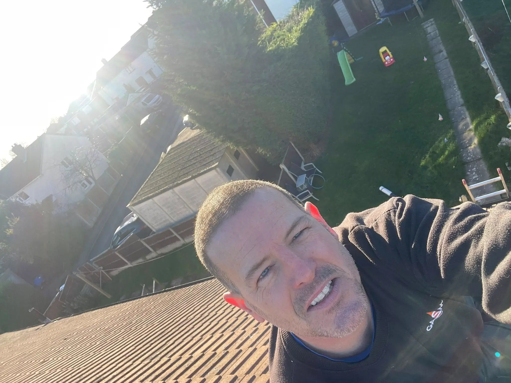
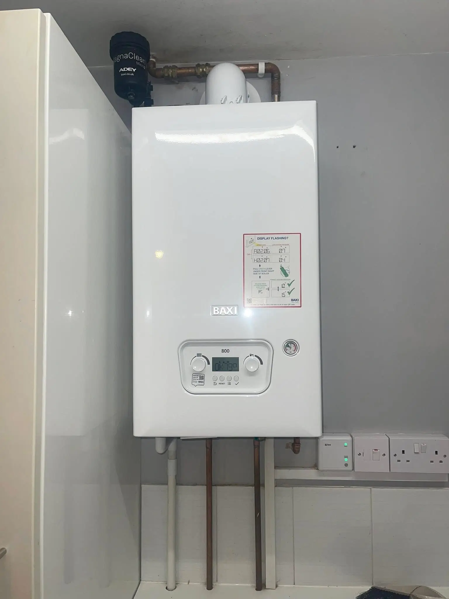

Gas Boiler Installations
New gas boiler installations in Nottingham, including supply, fitting, commissioning and full handover.
Learn moreFast response, honest pricing, tidy work and clear advice from a local boiler engineer in Nottingham homeowners are happy to call back.

Darren Davison
Gas & Boiler Engineer
"Highly professional - sorted our boiler same day!"
Call Darren NowGas boiler installations, gas boiler and cooker repairs, gas fire servicing, plumbing repair and landlords certificates in Nottingham.
New gas boiler installations in Nottingham, including supply, fitting, commissioning and full handover.
Learn moreFault finding and repairs for gas boilers and cookers across Nottingham, with fast response where available.
Learn moreGas fire servicing to help keep your appliance safe, clean and working correctly all year round.
Learn morePractical plumbing repair work for common household leaks, faults and fixes carried out to a high standard.
Learn moreAnnual gas safety certificates for landlords and rental properties, issued by a verified Gas Safe engineer (Corgi).
Learn moreThe strongest trust signal here is simple: people mention the same things again and again.
Often same day or next day, with clear communication before arrival.
Problems are explained in plain English before work goes ahead.
Repairs and installs are planned around what your home actually needs.
Respectful work inside lived-in houses, including family homes.


Real feedback from Nottingham customers who needed boiler and heating help.
I would highly recommend Darren, quick reply, out the next day, boiler problem solved the same day! Fantastic all round.
Darren explains what the problem was and what he has done. Recommend! Top service. Thank you.
Friendly, professional, and excellent value - highly recommended!
Need a boiler or gas engineer in Nottingham? Send the job details and Darren will get back to you promptly.
Common questions about Davison Gas Services.
Yes. Davison Gas Services is run by a verified Gas Safe engineer (Corgi), meaning gas work is carried out safely, legally, and to the required standard.
Yes. Davison Gas Services offers gas boiler and cooker repairs across Nottingham, with fast response where available.
Yes. Davison Gas Services provides landlords certificates for rental properties that need gas safety checks.
Davison Gas Services covers Nottingham and the wider Nottinghamshire area.
Contact Davison Gas Services directly for an honest, transparent quote. Darren provides upfront pricing with no hidden fees.